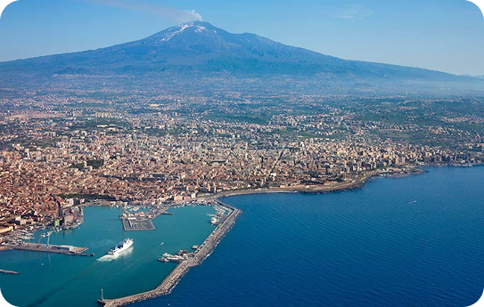
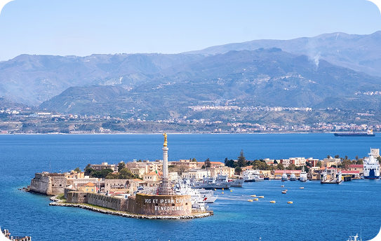
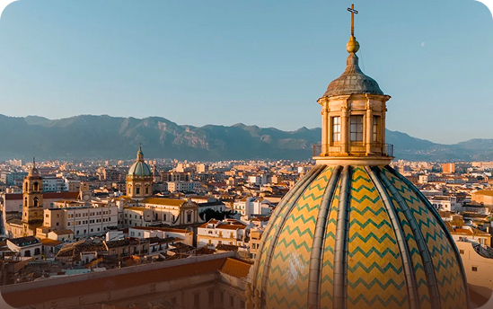
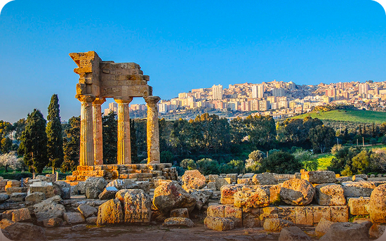
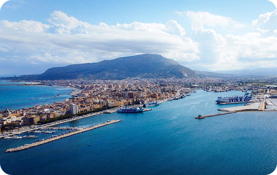
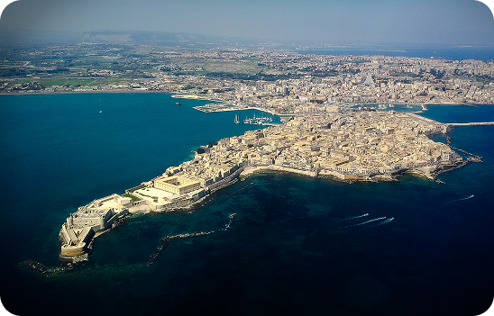

Province
Le province della Sicilia:
un mosaico di territori
La Sicilia è composta da nove province storiche, ognuna con caratteristiche distintive che contribuiscono alla varietà del territorio dell’isola. Palermo, il capoluogo regionale, rappresenta uno dei principali centri politici e culturali; Catania si distingue per la sua vitalità economica e per la presenza dell’Etna; Messina è la porta della Sicilia verso la penisola italiana grazie alla sua posizione sullo Stretto. Queste province, insieme, costituiscono alcuni dei poli urbani più importanti dell’isola.
Altre province offrono scenari molto diversi ma altrettanto significativi. Agrigento è famosa per i suoi straordinari siti archeologici e per le sue coste affacciate sul Mediterraneo, mentre Trapani è conosciuta per le saline, i paesaggi costieri e le tradizioni marinare. Siracusa, con il suo ricco patrimonio storico di origine greca, e Ragusa, nota per le splendide città barocche, rappresentano due importanti esempi di eredità culturale e architettonica.
Infine, province come Enna e Caltanissetta raccontano l’anima più interna della Sicilia. Enna, situata nel cuore dell’isola, offre panorami collinari e una posizione panoramica unica, mentre Caltanissetta è storicamente legata alle attività minerarie e alle tradizioni dell’entroterra. Insieme, queste nove province formano un territorio ricco di identità diverse che, unite, definiscono la complessità e il fascino della Sicilia.

Catania, costa ionica
Messina, sullo Stretto
Palermo, tra mare e monti
Agrigento, tra templi antichi
Trapani, luce e saline
Siracusa, l’isola di OrtigiaStoria, cultura e tradizioni
delle province siciliane
Le province siciliane custodiscono una storia millenaria, segnata dal passaggio di numerose civiltà. Fenici, Greci, Romani, Arabi e Normanni hanno lasciato tracce profonde nel territorio e nell’architettura delle città. Luoghi come Siracusa e Agrigento testimoniano ancora oggi l’importanza della Sicilia nel Mediterraneo antico, grazie a siti archeologici di grande valore storico.
La cultura delle province si esprime anche attraverso l’arte, la lingua e le tradizioni popolari. In molte città si svolgono feste religiose e sagre che celebrano prodotti tipici e santi patroni, momenti che rafforzano il senso di appartenenza delle comunità. La cucina varia da provincia a provincia, con piatti che riflettono le risorse locali e le influenze storiche ricevute nel corso dei secoli.
Infine, le province siciliane rappresentano oggi un equilibrio tra tradizione e modernità. Accanto ai centri storici e alle antiche tradizioni, si sviluppano attività economiche legate al turismo, all’agricoltura e ai servizi. Questa combinazione permette alla Sicilia di valorizzare il proprio patrimonio culturale mantenendo al tempo stesso uno sguardo al futuro.